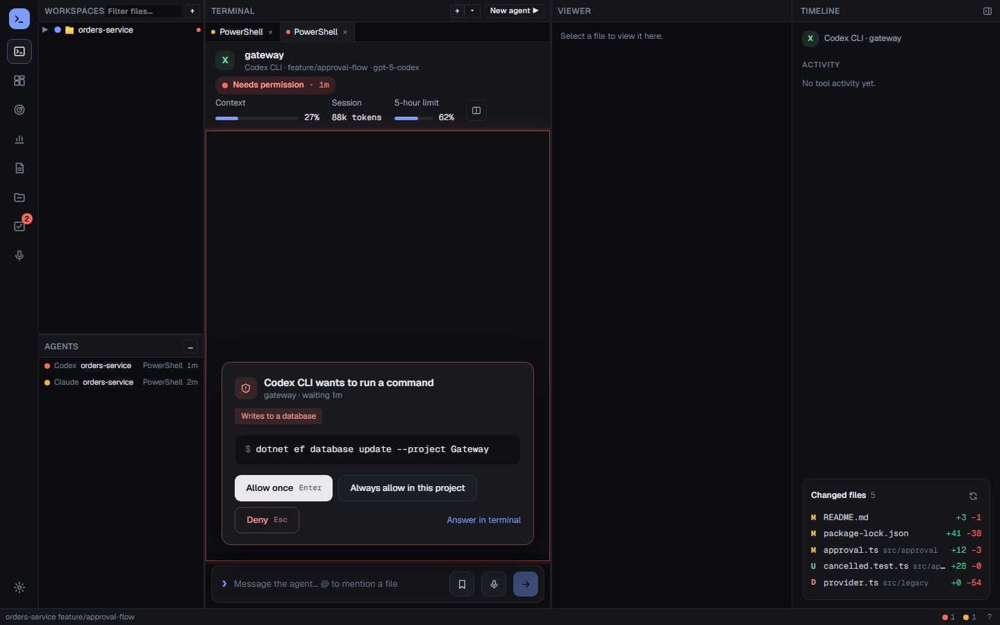
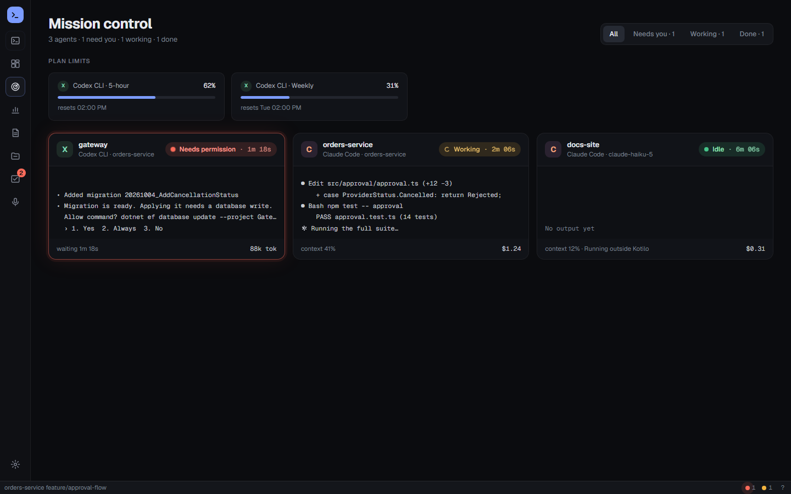
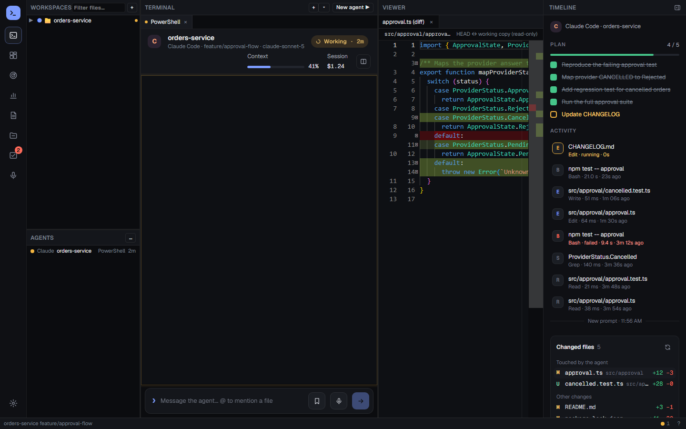
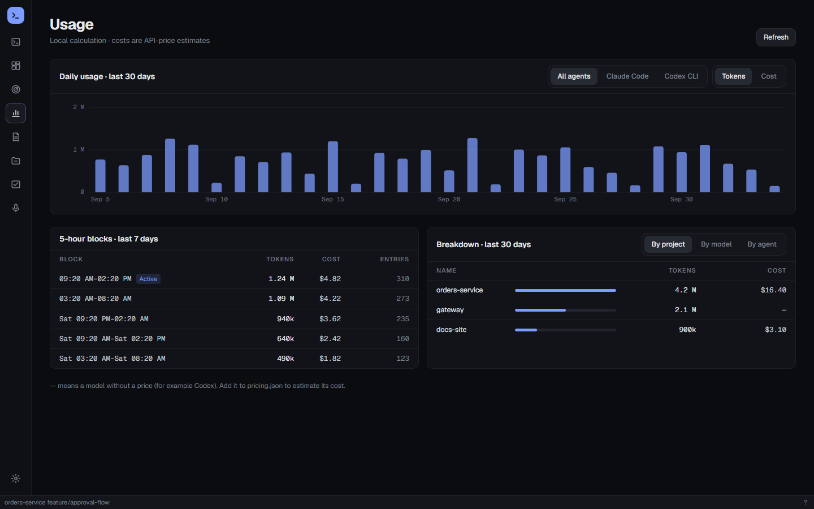
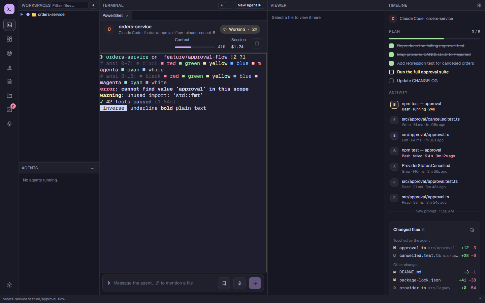
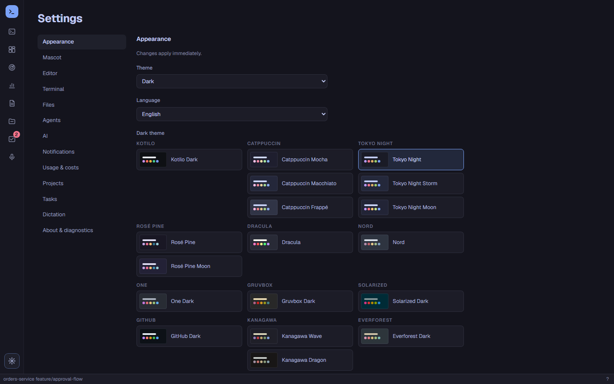

A home for your AI coding agents
Run Claude Code, Codex, Copilot, Gemini and more side by side in real terminals. See at a glance which agent is working, which one needs you, and what it all costs.

Every agent, every state, one window
Agents run unmodified in real terminals, signed in with your own account. Kotilo listens to the hooks and plugins they already provide, so it always knows what each session is doing, including sessions you started outside Kotilo.
Real terminals
Tabs and split panes with ConPTY shells, agent CLIs and your own commands. Clickable file:line links, file tree and diffs.
Permission card
See the tool, the command or file and a risk label. Allow once, always allow or deny with one click, or answer in the terminal.
Mission control
Every running agent on one screen, with a timeline of what each session did and the files it changed.
Usage, cost and limits
Tokens and estimated cost by day, 5-hour block, project, model and agent. Plan limits where the agent reports them. CSV and Excel export.
Review notes
Comment on lines of a diff and hand every note, with file, lines and code, to an agent as one prompt.
Sessions and resume
Every agent session of the last 90 days with model, project, tokens and cost. Resume one in its folder with the agent's own resume command.
Quick commands
Save the shell commands and prompts you use every day, per workspace or for all, and run them with one click.
Composer and tasks
Write longer prompts with file mentions and saved prompts. A personal task list, daily summaries and wait-time reports.
Local dictation
Push-to-talk speech-to-text with Whisper, running entirely on your machine.
Nothing slips by
Finished work you have not looked at stays marked, with a count on the taskbar icon and one "while you were away" summary when you come back.
Themes
Catppuccin, Tokyo Night, Rosé Pine, Dracula, Nord, Gruvbox, Solarized, GitHub, Kanagawa, Everforest and more, for the whole app and its terminals. Import your Windows Terminal schemes.
A snail on the taskbar
An optional robot snail mascot shows how your agents are doing and takes you to the one that needs you.
See what your agents are doing





Screenshots use invented demo data.
Works with the agents you already use
Kotilo installs an agent's hooks only when you click Install, backs up the agent's config first and removes only its own entries on uninstall. Any other CLI can join through an adapter.json file and the Agent Integration Protocol.
Details and known gaps per agent: support table.
Your agents, your data, your machine
Kotilo does not wrap or replace your agents and has no server of its own.
- No telemetry. No analytics, crash reports or tracking of any kind.
- No transcript content at rest. Prompts and responses are never written to Kotilo's database or logs; only counts and metadata.
- Never touches agent credentials. Kotilo does not read, copy, store or send any agent's login or token files.
- Your config files stay yours. Hooks are installed only when you ask, backup-first, and only Kotilo's own entries are changed.
- Local data. Settings, usage, tasks and reports live in local folders; AI provider keys in Windows Credential Manager.
- Few, optional connections. Update check (can be turned off), Whisper model download when you pick one, and AI providers you configure.
Full details: privacy policy.
Get Kotilo
Windows: per-user installer, no administrator rights needed. Requires Windows 11 and the WebView2 Runtime (installed automatically if missing). Updates arrive automatically from GitHub Releases.
Linux (x64): .deb for Debian and Ubuntu, .rpm for Fedora and openSUSE, or an AppImage for any distribution with WebKitGTK 4.1. Dictation, the mascot and global hotkeys are not on Linux yet.
macOS (preview): macOS 14 Sonoma or later. Open the .dmg and drag Kotilo to Applications. Apple Silicon is M1 and later; About This Mac shows your chip. Dictation, the mascot, global hotkeys and the Dock badge are not on macOS yet.
xattr -dr com.apple.quarantine /Applications/Kotilo.app in Terminal. See first launch on macOS.